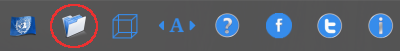

|
Para cambiar el directorio por defecto debemos dirigirnos al segundo de los botones en el panel superior de la aplicación, damos clic y escogemos el directorio deseado, esta opcion consiste en que cuando seleccione escoger un directorio de búsqueda en los filtros, por defecto la ventana abrirá con el directorio aquí seleccionado |
|  |